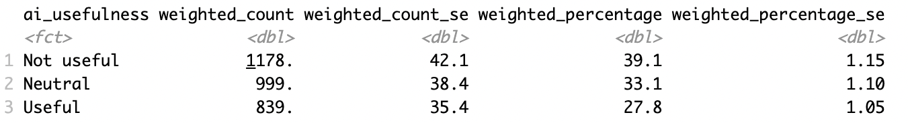
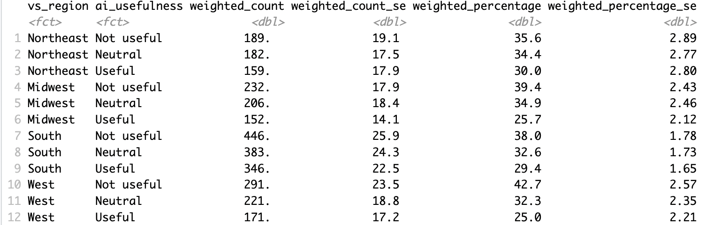
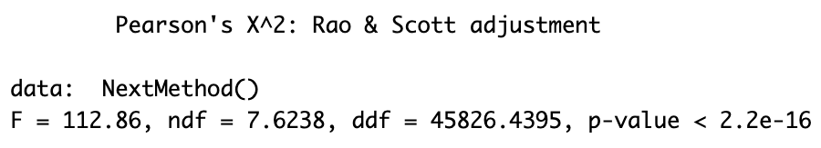

Project Overview
This project, conducted as part of a Cornell University course, involved creating and fielding a nationally representative survey with over 3,000 US adults in partnership with Verasight. The survey gauged attitudes on topics such as politics, social media, and the environment.
Process
Key steps included:
- Question Design: Drafted and refined survey questions, focusing on factors like wording, answer options, and randomization.
- IRB Training: Completed certification to conduct human research ethically.
- Survey Deployment: Sent the survey to a representative sample of 3,016 US adults from October 21–November 5, 2024.
- Data Analysis: Analyzed responses in R, applying survey weights and recoding answer options for easier interpretation.
Personal Contribution
My research focused on attitudes toward AI in education, with the question: “How useful do you believe artificial intelligence (AI) is as a tool in classrooms?” After collecting responses, I:
- Recoded responses into three categories: “Not Useful,” “Neutral,” and “Useful.”
- Calculated weighted percentages, finding that 39.1% of Americans found AI not useful, 33.1% were neutral, and 27.8% found it useful.
- Analyzed regional differences, revealing higher skepticism in the West (42.7% “Not Useful”) and more optimism in the Northeast (30% “Useful”).
- Cross-tabulated my question with a similar one in the survey and ran a chi-square test, confirming response validity (p-value < 2.2e-16).
- Drafted an op-ed to contextualize the findings and explore their implications for the future of AI in education.
Key Findings
- Public skepticism toward AI in education is significant, with most respondents finding it “Not Useful.”
- Regional differences suggest cultural or technological divides influence attitudes toward AI.
- Chi-square analysis confirmed that question phrasing did not significantly alter responses, validating the data’s reliability.
Skills Demonstrated
- Survey design and deployment with a nationally representative sample.
- Data analysis and visualization using R and RStudio.
- Statistical testing and interpretation, including chi-square analysis.
- Written communication through op-ed writing and presenting findings.
Key Visualizations



View Full Report
The full op-ed report is available for download: Download Op-Ed.